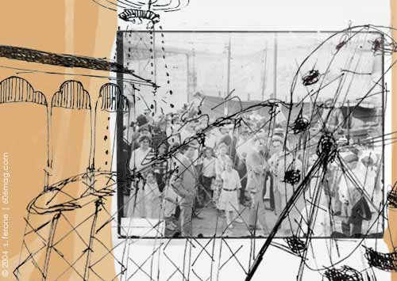

 |
Chicago loves a funhouse. It always has. And it likes to have it close by. Recently, Mayor Richard Daley announced his plan to seek a change to Illinois law that would grant a permit for a land-based casino in downtown Chicago . Despite opposition from the governor and citizens' groups, there's an unavoidable sense that the casino will happen, that Daley will eventually prevail. It seems like a good bet that licensed gaming will find a foothold inside the city limits sooner rather than later. For better perspective on the whole issue, let's rewind a century. In May 1904, Riverview Amusement Park opened to the public at Belmont and Western Avenues. Heralded as the largest amusement park of its time, Riverview enjoyed a 63-year run, entertaining Chicagoans with thrill rides, games of chance and staged spectacle. Generations of city dwellers came to associate Riverview with summertime excitement. The park was undeniably a place of high times and revelry, billed as a place to “laugh your troubles away,” but just as the exhilaration of a roller coaster isn't experienced without the terror of cresting the first drop, the feel-good portrayal of the park is only the most dominant memory that lingers. Riverview had a less wholesome side. Corporate fraud beset the park early on, while deaths from thrill ride mishaps plagued the park almost until it closed. The penny arcade, always the seediest aspect of the park, was the target of accusations in 1939 that Riverview employees assaulted young boys. Strikingly insensitive human freak shows were a regular crowd-pleaser, while the “African Dip” consisted of African-Americans sitting atop dunk tank platforms insulting white male passers-by with the goal of encouraging them to pay to hurl baseballs at a dunk tank lever.. Less astonishing, but certainly not altogether wholesome, was an exhibit that purported to take you on a simulated trip through Hell and a space-age addition called “You and the Atom” that actually dropped a dollop of radioactive Uranium-235 on a coin as a souvenir for visitors. Yet, Riverview's overall legacy is almost unblemished. Even today, the power of the park still resonates with a nostalgia for those who remember it. If descriptions don't create the atmosphere of a “Happy Days” episode, then they at least make the listeners feel like they are watching the final feel-good sequence in Grease on infinite repeat. Since the World's Colombian Exposition Chicago has always been a city with grand visions of urban entertainment. Riverview came to exemplify this tradition, an island of amusement set squarely in the middle of the stream of urban flux. The proposed casino would participate in this same tradition, . Bringing gaming to Chicago may ultimately be approved because the city can't afford to pass up the revenue it would generate, but it may also win the day because of the memory of places like Riverview. |